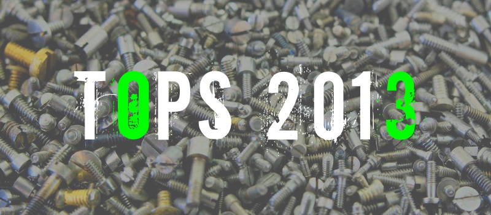
Vamos con la segunda parte de nuestro especial «Lo mejor del 2013». A ver si esta vez encontráis gustos más afines.
Como ya sabéis, en cada carátula podréis pinchar para dirigiros a una crítica más extensa del disco, siempre y cuando dispongamos de ella. Que las disfrutéis.
____________________________________________________
Asbestos
Top General 2013:
1. Pharmakon – Abandon
Debut en LP de un proyecto ya de más o menos largo recorrido como el de la señorita Chardiet, que marca las distancias con su anterior EP rebajando notablemente el nivel de agresión sónica y que compensa entregando un disco de industrial altamente memorable y adictivo, y, como apunté en su momento, uno de los pocos discos de noise que han conseguido ponerme la carne de gallina, y eso es decir mucho. Francamente hubiera preferido algo más de mala sangre y ruidaco porque así soy yo, pero, tal como llega, Abandon es para mí el disco del año sin ningún tipo de paliativo.
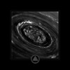 2. Fell Voices – Regnum Saturni
Las modas vienen y se van y queda un hueco en el suelo que sólo pueden rellenar los mejores. Fell Voices son uno de los nombres más destacados de la reciente oleada de black metal atmosférico y Regnum Saturni los cimienta como una banda que no juegan a lo fácil y se empeñan en enterrar sus tres largos temas bajo una producción neblinosa y opaca como pocas. Por debajo de ella, brillantez sublimada.
 3. Man’s Gin – Rebellion Hymns
3. Man’s Gin – Rebellion Hymns
Sin duda uno de los discos más esperados del año en SBS, Erik Wunder y compañía han llevado su folk/americana de alma grunge a nuevas simas de degeneración y alcoholismo en destartalados bares de carretera. Rebellion Hymns es de ahora en adelante la única banda sonora para los días en que te despiertas convertido en escoria humana y ya está oscuro y te arrastras al salón a comer restos de pizza fría para eliminar el sabor del bourbon barato de tu boca.
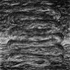 4. Ash Borer – Boodlands
Ash Borer se cascaron el que para mí fue el mejor disco del año 2012 y este EP es la continuación de aquel Cold of Ages, misma dirección, dosis extra de mugre e incursiones en ritmos más fúnebres que de costumbre. Reconozco que Ash Borer son una de mis bandas favoritas del momento porque si bien no se apartan demasiado del camino despejado, al menos se les da cojonudamente bien hacer lo que hacen.
5. Grave Miasma – Odori Sepulcrorum
2013 ha sido un buen año para el death metal y la prueba son los ingleses Grave Miasma. Su primer álbum llegaba con expectación y en mi opinión ha cumplido con lo que se esperaba: Odori Sepulcrorum abunda en buenas ideas, nunca se hace pesado y es en general uno de los mejores discos de death metal oscuro, opresivo y atmosférico que han aparecido en años.
6. Rorcal – Világvége
Un cambio de formación en la banda suiza y también un cambio de registro. Apartándose del megalomaníaco Heliogabalus, Rorcal abrazan más si cabe sus influencias blackmetaleras y suben las revoluciones en Világvege que, aunque avanza a un ritmo considerablemente más acelerado que Heliogabalus, conserva intacto todo el veneno que hizo que me enamorara de esta banda en primer lugar. Y los riffs, claro. Uno no puede discutir con los riffs.
7. Iron Lung – White Glove Test
Demasiados años hacía ya desde el anterior LP de este dúo que se ha establecido por derecho propio como uno de los clásicos modernos del powerviolence. Iron Lung regresan con un digno castañazo de punk violento y caótico, y como bola extra, exploran su aspecto más ambiental/noise con un largo tema en la vena industrial que además está pensado para ser escuchado a la vez que el disco normal. Si en algún momento de 2013 te han sobrado 20 minutos, escuchar White Glove Test es de lo más entretenido que podrías haber hecho con ellos.
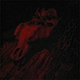 8. Grave Upheaval – (No Title)
Con miembros de Portal entre sus filas, Grave Upheaval lleva el estilo death/black metal de su hermana mayor a nuevos abismos de oscuridad, depravación y FUKK hasta un nivel que roza el ridículo. Los riffs son indistinguibles bajo una muralla de graves y la voz suena como un demonio susurrándote cerdadas al oído. Grave Upheaval son death metal sin todo lo que podría hacerte rockear con la polla fuera, el cadáver de todo un género abandonado para descomponerse en medio de un pantano de aguas sulfurosas.
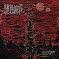 9. Obliteration – Black Death Horizon
Obliteration triunfan con creces a la hora de conjugar sus raíces old school (Autopsy, los primeros Darkthrone) con un enfoque único que los aleja de ser una mera copia más entre tantas. Black Death Horizon no llega a ser el pepino de disco que es su anterior Nekropsalms pero tiene un toque incluso más personal y marciano. Sus armas son las ensaladas de riffs que no pocas veces descienden a terrenos pantanosos y doom, un batería tremendamente variado y efectivo y una actuación vocal jodidamente demencial.
10. Wolvserpent – Perigaea Antahkarana
Este dúo norteamericano se presenta un tanto inaccesible con un álbum de casi hora y media y temas que no bajan de 15 minutos. Pese a ello, siendo fan del black metal atmosférico y agreste reconozco en Wolvserpent una versión doom de unos Wolves in the Throne Room o similar, muchas veces suenan como un riff de black metal interpretado por encima de un machacón riff doom. Perigaea Antahkarana es en conjunto una experiencia satisfactoria pero adolece de relleno con un extenso tema ambiental en el que ocurre poca cosa y que me acaba cortando el rollo a medio disco; una cierta poda le habría venido bien.
Top Nacional 2013:
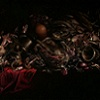 1. Fasenuova – Salsa De Cuervo
Debemos estar ante una convergencia sin precedentes en la gloriosa historia de SBS y eso quiere decir que los de Mieres han hecho algo gordo. Lejos queda aquello del maltrato ruidista extremo pero el pelotazo de electrónica machacona y bailable, psicodélica , surrealista y tremendamente personal que es Salsa de Cuervo es capaz de dejar con la boca más abierta si cabe.
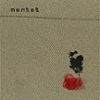 2. Mentat – Antagonistas
Pocas bandas ha habido tan infravaloradas e ignoradas en este país como Mentat. Este Antagonistas es la continuación de Amarillo Abisal, obra maestra del grupo valenciano y también del sludge (atmosférico) nacional y tristemente también el punto y final de una banda a la que las circunstancias no les han sido precísamente propicias. Antagonistas definitivamente deja con ganas de más.
3. Machetazo – Ruin
Los fans del grindcore pueden tener una cosa como más o menos segura en la vida, y es que cuando Machetazo sacan disco va a petarlo. Este último llega cinco años después del anterior, Mundo Cripta, y continúa por el camino de acercamiento al death metal que habían iniciado con anterioridad. En Ruin incluso se permiten levantar el pie del acelerador y dejar un par de temas de doom/death jodido para la posteridad. Poco más hay que decir, quienes conozcan a Machetazo y no hayan escuchado esto, ya saben qué esperar.
4. Hipoxia – Hipoxia/Gangrened Split
Los herederos españoles de Grief por derecho propio acortan la espera hasta su segundo álbum con un split junto con los finlandeses Gangrened, en forma de un extenso tema donde dan rienda suelta a toda la peste y el óxido que llevan en su interior. En este año en que el doom metal parece haber involucionado a los años 70 pero dejándose la gracia por el camino, uno tiene que apreciar a las bandas como Hipoxia que hacen del sludge y la miseria su bandera.
5. Sangre De Muerdago – Deixademe…
Independientemente del número de hijos que tengas a tu cargo, el segundo álbum de esta banda gallega de neofolk es de lo más bonito que ha salido este pasado año. Atávico, hipnótico, envolvente y emotivo son varios de los adjetivos que se aplican para Deixádeme Morrer no Bosque.
Menciones Especiales 2013:
The Body, Occult Burial, Bölzer, Eibon, Mammoth Grinder, Irkallian Oracle, Puce Mary, Paysage d’Hiver, Dead in the Dirt, Cultes des Ghoules, Cosmic Church, Beyond, Celeste, Ruin Lust, Stomach Earth, Vasaeleth, etc.
Sorpresas 2013:
Lo único que me sorprende es el mal gusto que tienen mis compañeros de staff, por lo demás, nada nuevo en la oficina.
____________________________________________________
Rememorama
Top General 2013:
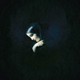 1. True Widow – Circumambulation
Circumambulation me atrapa con sus tentáculos de slowcore y me hace sumergirme en un mundo en el que todo funciona más despacio pero en el que soy consciente de todo. Estas sensaciones (algo narcóticas, tanto por lo adictivo como por la alteración de mis sentidos) son las que han condicionado mi criterio subjetivo sobre el mejor disco del año.
2. Steven Wilson – The Raven That…
El segundo puesto se lo lleva el disco que más se ha acercado a la diana del concepto clásico del Arte: la belleza. El británico queda más que demostrado como un compositor brillante, repleto de ideas, experto en crear arquitecturas musicales armónicas, capaz de sacarle jugo a la música progresiva y a la fusión, y a la vez volviendo a otra de las raíces de la música, la transmisión de historias.
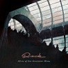 3. Riverside – Shrine Of New…
Queda claro que no es su mejor disco, pero los polacos siguen todavía siendo un referente de la elegancia y la finura en el rock progresivo. A veces íntimo, otras volátil, en otras tirando de rock de los 70, SoNGs es precisamente el significado de su acrónimo, una colección de grandes canciones.
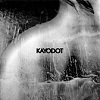 4. Kayo Dot – Hubardo
Hubardo es la mayor sorpresa que me llevo este año. Una bizarrada moderna en la que Toby Driver y su grupo nos lleva por sendas a veces sin rumbo concreto pero en las que el black metal se confunde con el jazz, la orquestación clásica, el sludge, el rock progresivo y el sonido más gótico (maravilla el mejor tema del año And He Built Him A Boat), todo ello sin caer en la pretenciosidad.
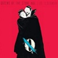 5. Queens Of The Stone Age – …Like…
Josh Homme se aleja de su rock más guitarrero para soltar toda la mierda de sus crisis personales y dar cabida al disco más ecléctico pero a la vez más cuidado de sus últimos lanzamientos en el que toman un peso enorme las baladas. Una obra de casi de salón y batín, a veces aterciopela y altiva, pero repleta de sabor.
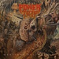 6. Power Trip – Manifest Decimation
Nunca fui fan del thrash de los 80, pero cuando un grupo así sabe escupírtelo en la cara con toda esa honestidad y el sabor añejo de antaño, caigo instantáneamente rendido a sus pies. Por la producción, la mala baba, sus ensaladas de riffs, sus solos enfermos castigados por un vibrato que parece a punto de romperse, Manifest Decimation merece estar en la lista.
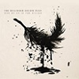 7. The Dillinger Escape Plan – One Of…
Como dije en mi reseña, a veces no valoramos a los perros viejos aunque hayan enseñado a cazar a otros más jóvenes y más ladradores. Este quinteto de desquiciados se han vuelto a sacar de la manga otro discazo de ritmos imposibles pero cargado de música. Los temas están rematados con sensacionales estribillos, detalles técnicos y dejes pattonianos que me enamoran.
8. Nick Cave – Push The Sky Away
No tengo ni idea qué tiene Nick Cave en la cabeza, pero es maravilloso. Sus letras, sus historias, esa mezcla surrealista de caprichos sexuales, fantasías y los miedos de la “crisis de la media vida” ponen el hilo conductor al disco falsamente tranquilo. Baladas espinosas en la que Nick deja atrás la rabia, pero le pone un toque casi crooner e irreverente.
9. Sigur Rós – Kveikur
Veinte años de uno de los grupos más originales de los últimos tiempos y Kveikur sigue siendo otro sólido peldaño de la carrera de los islandeses en el que vuelven a dar otro cambio a su sonido, esta vez bajo una atmósfera más oscura, una rítmica más pesada que juega con el industrial (maravillosas percusiones) y la clásica faceta emotiva de Jónsi.
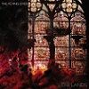 10. The Flying Eyes – Lowlands
Por su pertinaz trayectoria, y por los temazos que forman este disco de blues sucio y distorsionado, que sabe buscar las texturas y que a veces roza el doom más denso, los norteamericanos se han ganado el derecho a ocupar la última posición de este top.
Top Nacional 2013:
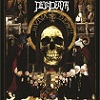 1. Dejadeath – ¡¡¡Viva Dios!!!
La banda sonora para el Día de San Martín. Así, a cuchillazos y con esta machacadora de dientes de death-metal. Los barceloneses impresionan con su debut y se ponen a la primera fila de un género que este año parece haber tenido la “mejor cosecha” desde hacía mucho.
2. Estirpe – Neurasia
Si al disco le quitamos algún bajón de AOR, está básicamente compuesto por temas de auténtico 10 en el que se dan cita el rock y el metal con las percusiones latinas, los grooves funk del bajo de Pepe Bao, y el clásico sabor de la voz de Mart, uno de los mejores vocalistas del país. Está claro que The Mars Volta, Foo Fighters y RATM tienen mucho que ver en el éxito de la propuesta, pero no quita para que Neurasia sea un imprescindible.
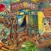 3. Prisma Circus – Reminiscences
Casi se me saltan los empastes al descubrir el orgiástico blues psicodélico de estos catalanes. Reminescences es un disco dinámico y lleno de vida (nunca me dejarán de sorprender estos power-tríos que son capaces de llenar tanto el sonido), de producción vintage y que bebe de los 60 y 70. Una auténtica lluvia de colores.
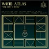 4. Wind Atlas – The Not Found
The Not Found puede parecer una propuesta dulce y etérea, pero en realidad guarda una profundidad, una oscuridad y una complejidad velada, capaz de llevarme (como nadie había conseguido hasta ahora), a terrenos donde sentir el drone, el atavismo y el goticismo litúrgico.
5. Elevi – Elevii
Puede que haya discos nacionales más brillantes, pero por pura reinvidicación de lo que me parece una de las bandas más infravaloradas en España elijo el segundo y póstumo trabajo de estos onubenses, Elevii, donde se dan cita de una forma personal y original el rock progresivo y el flamenco, una mezcla que parecía casi olvidada desde los años 70.
Menciones Especiales 2013:
Discos que no han podido entrar en el Top 10 pero que sin embargo han estado a las puertas han sido el excelente Pain Is Beuty de Chelsea Wolfe, donde la artista americana ha demostrado lo bien que se funde con los materiales inorgánicos; el The Fury of a Patient Man del cuarteto stoner Gozu, cargado de estribillos más directos y adictivos que la nicotina; Sky Burial de Inter Arma, capaz de fusionar géneros como el black, el post y el sludge en un nuevo estilo hasta ahora inetiquetado, y por supuesto el The Mountain de los británicos Haken, disco impresionante a nivel de estructuras vocales y la creatividad en el ámbito del rock progresivo.
Sorpresas 2013:
Gracias a nuestra nueva sección de “5 bandas mensuales” he descubierto a grandes propuestas como los ya mentados Power Trip, el cuarteto de stoner checo Love Is Pablo, el doom de los norteamericanos Windhand, y por otros medios a grupos ya más veteranos como Haken o Kayo Dot.
____________________________________________________
Psichoboy
Top General 2013:
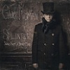 1. Gary Numan – Splinter, Songs From…
Con Rammstein procurando no morir devorados por sus propios personajes, con Manson reconvertido en modelo hipster, mientras Al Jourgensen se ozzyosbourniza y arrastra el nombre de Ministry y con Reznor empeñado en hacer de NIN algo aburrido e inofensivo, que venga uno de los popes del uso de los sintetizadores a dar un golpe en la mesa es algo sintomático. Pero eso sería no hacer justicia ante la segunda juventud que está viviendo Gary Numan. Splinter… es oscuro, elegante y probablemente el último gran disco de rock industrial que podremos escuchar en mucho, mucho tiempo.
2. Man’s Gin – Rebellion Hymns
El aliento hediendo a whisky, la camisa manchada con sangre reseca y las uñas cuarteadas y sucias. El alma de Man’s Gin está rota, vapuleada y golpeada por nudillos pelados. Necesita de la soledad que le brinda la naturaleza, y en ella rebusca entre tormentas y vendavales para dar forma a su música. Erik Wunder y su folk con alma de black metal y taberna sórdida han sido, sin duda alguna, lo mejor de este 2013.
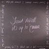 3. Scout Niblett – It’s Up To Emma
El universo de esta cantautora inglesa es minimalista y austero en apariencia, pero desgarrador y visceral cuando se despliega en nuestros oídos. It’s Up To Emma es un disco cautivador, brillante por momentos, que despliega todas sus armas desde el primer tema. Una colección de pequeñas historias que por mérito propio tenían que estar en este Top.
4. Queens Of The Stone Age – …Like…
No es un disco fácil ni mucho menos. No para escucharlo, si no para que te guste. Lo nuevo de Queens Of The Stone Age es el trabajo más personal e íntimo de Josh Homme, donde se nos desvela la naturaleza vulnerable y sensible del músico que nos vapuleó en discos anteriores inmisericordemente, … Like Clockwork requiere que nos pongamos de su parte para enseñarnos sus cartas. Una vez que lo consigue, es difícil que nos suelte.
5. Church Of Misery – The Kingdom Scum
Bautizados como «Chachi Of Misery» por parte del staff, los japoneses han vuelto a la palestra con otro disco de su fiable y burrísimo doom, con esos ecos a Black Sabbath que tan bien les quedan, y con otra ración de historias de asesinos en serie, psicópatas y demás escoria morbosa. Y por mí, que sigan así durante mucho tiempo y muchos más discos.
6. Monster Magnet – Last Patrol
Algunos, entre los que me incluyo, dábamos por muertos a Monster Magnet. La salida de Ed Mundell tras la publicación de Mastermind parecía reafirmar ese mal augurio, pero Dave Wyndorf se ha encargado de recordarnos que no hay que vender la piel del oso antes de tiempo. Queda lejos de sus mejores momentos, cierto, pero con un pepinazo como los nueve minutos de Last Patrol (tan espaciales como dignos herederos del sonido de sus primeros discos), mejor callar la boca y disfrutar del retorno de los Magnet.
7. Pharmakon – Abandon
Siempre he tenido un poco de reticencia con el noise y el industrial. La ausencia de melodía es un escollo que a veces dificulta que uno se acerque, pero no es el caso de Pharmakon. Si bien el alma ruidista permanece imperturbable, haberla rodeado de una aureola más accesible convierte a Abandon en un trabajo tan visceral como perfecto para el que quiera probar con la anti-música por antonomasia.
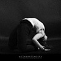 8. Altar Of Plagues – Teethed Glory And Injury
Si algo estoy aprendiendo en SuicideByStar es a apreciar el black metal más allá de su dimensión más primigenia y garrula. Altar Of Plagues son de esos grupos que a partir de ese punto de partida deciden que el camino recto no siempre es el mejor y Teethed Glory and Injury es un ejemplo de como se hace un álbum de black metal moderno, picoteando un poco de aquí y de ahí, pero sin resultar abrumador ni epatante.
9. Correction’s House – Last City Zero
Montar un Supergrupo siempre tiene un alto porcentaje de probabilidades de que termine siendo una mala idea. Pese a ello, Scott Kelly de Neurosis lo ha probado con sus colegas Mike IX Williams (Eyehategod), Sanford Parker (Nachtmystium) y Bruce Lamont (Yakuza/Bloodiest). El resultado es un disco un tanto disperso que va del metal industrial al post metal, pero con un resultado global tan interesante como para poder decir que este Supergrupo no se ha estrellado nada más nacer.
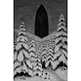 10. Paysage d’Hiver – Das Tor
De vueltas al black metal, Paysage d’Hiver representan la vertiente más ortodoxa en contraposición a la de Altar Of Plagues. Black Metal de pasajes atmosféricos capaz de congelarte la sangre, de hacerte sentir frío en lo más profundo de tus huesos y de que se te erice el vello notando el vendaval que levanta una tormenta de nieve.
Top Nacional 2013:
1. Fasenuova – Salsa De Cuervo
Coincido con otros miembros del staff, pero es que no es para menos: Salsa de Cuervo es un discazo, sin paliativos. El dúo asturiano se convierte por méritos propios, en uno de los representantes más interesantes de la música electrónica estatal y por si alguien lo dudaba ya, en los únicos capaces de perpetuar la herencia de grupos como Esplendor Geométrico.
2. El Pardo – El Pardo
El Pardo son necesarios, son contigentes y TODO el mundo debería escuchar su debut. Si un grupo ha sabido catalizar mejor que nadie esa bilis que llevamos acumulando desde quien sabe cuando, y la ha sabido adornar de tal manera que cada línea de bajo, cada frase recitada por el cantante y cada riff suenen como un escupitajo, son ellos. Mala leche y post punk nunca habían combinado tan bien.
3. Dejadeath – ¡¡¡Viva Dios!!!
La primera vez que escuché este disco acabé estampado contra la pared mientras mis sesos colgaban del techo. La tormenta de riffs que se desata tal como empieza Every Pig Into The Fire es gloria incluso para los que, como yo, no somos especialmente amantes del metal extremo. Una barrabasada de disco que pone a Dejadeath como una de las bandas más interesantes del extremo estatal.
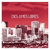 4. Des Ames Libres – Des Ames Libres
Lo cierto es que aún les quedan cosas por pulir, pero al final se han colado entre mis cinco bandas nacionales del año: por su elegancia (y por esa querencia al terciopelo del gótico de los 80) y originalidad, por su dinamismo y porque siendo como soy tan amigo de las sonoridades oscuras, lo he disfrutado mucho. Y eso es lo que cuenta.
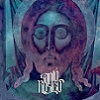 5. Santo Rostro – Santo Rostro
Se les podría achacar que son poco originales y una copia de Mastodon a ratos, no lo negaré, pero su debut está a un nivel técnico altísimo, y pese a que titubea en algunos momentos puntuales, es una gozada engorilarse con sus riffs y hacer headbanging como un poseso mientras lo escuchas.
Menciones Especiales 2013:
No han entrado en mi top por falta de tiempo, pero Beastmilk y su debut Climax están sin duda entre lo mejor del año, aunque se eche de menos la producción apocalíptica del 7″ del año anterior. El retorno de David Bowie y su The Next Day, aunque cuesta acercarse al disco por toda la histeria generada por los medios, es una bofetada en toda la cara para quienes hayan podido dudar alguna vez del Duque Blanco. Nick Cave y su Push The Sky Away, un disco de una elegancia desbordante que nos devuelve a los Bad Seeds tras los brutales discos de Grinderman. California X se han quedado cerquita de entrar también, excelente su debut repleto de guitarras noventeras. Y otros veteranos que merecen atención, New Model Army y su disco Between Dog And Wolf.
Sorpresas 2013:
Nadie esperaba nada de Stooges y Ready To Die es un disco más que digno para una banda que venía de sacar una cosa tan floja como The Weirdness. Y menos todavía teniendo en cuenta que sus rentas vienen del directo, pero el caso es que es, sin duda alguna, una de las sorpresas más agradables del año. La aparición de El Pardo y Dejadeath, que ya están en mi top Nacional. La hostia que pensé que se meterían Correction’s House y como su disco me ha callado la boca con algunos temas realmente potentes y bien hechos.
____________________________________________________
Apoyános